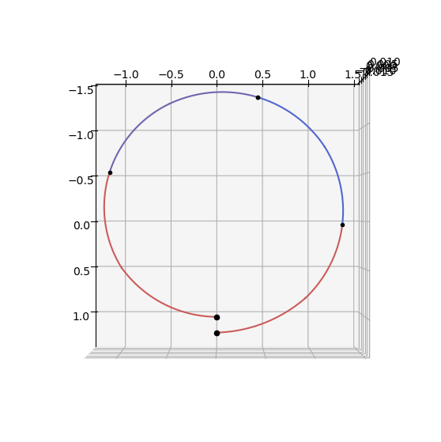
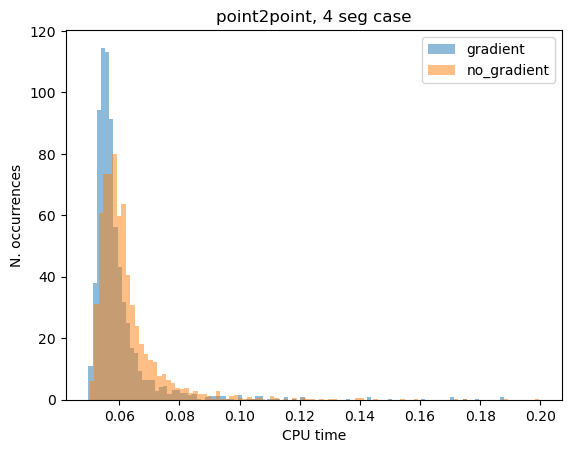

Sims-Flanagan: point to point low-thrust transfer#
In this tutorial we show the use of the pykep.trajopt.sf_point2point to find a low-thrust trajectory connecting two fixed points in space.
Since the points are considered fixed this effort has mainly an academic value, but it is informative in the study of the numerical properties of an optimization pipeline.
The decision vector in this class, compatible with pygmo [BI20] UDPs (User Defined Problems), is:
\[
\mathbf x = [m_f, u_{x0}, u_{y0}, u_{z0}, u_{x1}, u_{y1}, u_{z1}, ..., T_{tof}]
\]
Note
This notebook makes use of the commercial solver SNOPT 7 and to run needs a valid snopt_7_c library installed in the system. In case SNOPT7 is not available, you can still run the notebook using, for example uda = pg.algorithm.nlopt("slsqp") with minor modifications.
Basic imports:
import pykep as pk
import numpy as np
import time
import pygmo as pg
import pygmo_plugins_nonfree as ppnf
import time
from matplotlib import pyplot as plt
# Problem data
mu = pk.MU_SUN
max_thrust = 0.22
isp = 3000
# Initial state
ms = 1000.0
rs = np.array([1.2, 0.0, -0.01]) * pk.AU
vs = np.array([0.01, 1, -0.01]) * pk.EARTH_VELOCITY
# Final state
rf = np.array([1, 0.0, -0.0]) * pk.AU
vf = np.array([0.01, 1.1, -0.0]) * pk.EARTH_VELOCITY
# Throttles and tof
nseg = 4
throttles = np.random.uniform(-1, 1, size=(nseg * 3))
tof = 2 * np.pi * np.sqrt(pk.AU**3 / pk.MU_SUN) / 4
udp_nog = pk.trajopt.sf_point2point(
rvs=[rs, vs],
rvf=[rf, vf],
ms = 1000,
mu=pk.MU_SUN,
max_thrust=0.22,
veff=3000*pk.G0,
tof_bounds=[200, 500],
mf_bounds=[200.0, 1000.0],
nseg=nseg,
cut=0.6,
with_gradient=False,
)
udp_g = pk.trajopt.sf_point2point(
rvs=[rs, vs],
rvf=[rf, vf],
ms = 1000,
mu=pk.MU_SUN,
max_thrust=0.22,
veff=3000*pk.G0,
tof_bounds=[200, 500],
mf_bounds=[200.0, 1000.0],
nseg=nseg,
cut=0.6,
with_gradient=True,
)
snopt72 = "/Users/dario.izzo/opt/libsnopt7_c.dylib"
uda = ppnf.snopt7(library=snopt72, minor_version=2, screen_output=False)
uda.set_integer_option("Major iterations limit", 2000)
uda.set_integer_option("Iterations limit", 20000)
uda.set_numeric_option("Major optimality tolerance", 1e-3)
uda.set_numeric_option("Major feasibility tolerance", 1e-12)
# uda = pg.nlopt("slsqp")
algo = pg.algorithm(uda)
prob_nog = pg.problem(udp_nog)
prob_nog.c_tol = 1e-6
prob_g = pg.problem(udp_g)
prob_g.c_tol = 1e-6
pop_g = pg.population(prob_g, 1)
pop_g = algo.evolve(pop_g)
print(prob_g.feasibility_f(pop_g.champion_f))
True
ax = udp_nog.plot(pop_g.get_x()[0], show_gridpoints=True)
ax.view_init(90, 0)

from tqdm import tqdm
cpu_nog = []
cpu_g = []
fail_g = 0
fail_nog = 0
for i in tqdm(range(2000)):
pop_nog = pg.population(prob_nog, 1)
pop_g = pg.population(prob_g)
pop_g.push_back(pop_nog.get_x()[0])
start = time.time()
pop_g = algo.evolve(pop_g)
end = time.time()
cpu_g.append(end - start)
if not prob_g.feasibility_f(pop_g.champion_f):
fail_g += 1
start = time.time()
pop_nog = algo.evolve(pop_nog)
end = time.time()
cpu_nog.append(end - start)
if not prob_nog.feasibility_f(pop_nog.champion_f):
fail_nog += 1
print(f"Gradient: {np.median(cpu_g):.4e}s")
print(f"No Gradient: {np.median(cpu_nog):.4e}s")
print(f"\nGradient (n.fails): {fail_g}")
print(f"No Gradient (n.fails): {fail_nog}")
100%|██████████| 2000/2000 [1:57:55<00:00, 3.54s/it]
Gradient: 2.7463e-01s
No Gradient: 2.7796e-01s
Gradient (n.fails): 192
No Gradient (n.fails): 189
cpu_g = np.array(cpu_g)
cpu_nog = np.array(cpu_nog)
plt.hist(cpu_g[cpu_g < 0.2], bins=100, label="gradient", density=True, alpha=0.5)
plt.hist(cpu_nog[cpu_nog < 0.2], bins=100, label="no_gradient", density=True, alpha=0.5)
# plt.xlim([0,0.15])
plt.legend()
plt.title("point2point, 4 seg case")
plt.xlabel("CPU time")
plt.ylabel("N. occurrences")
Text(0, 0.5, 'N. occurrences')
